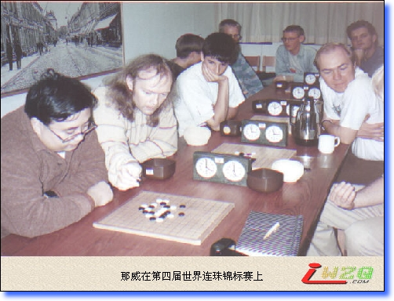
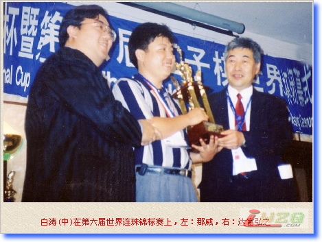
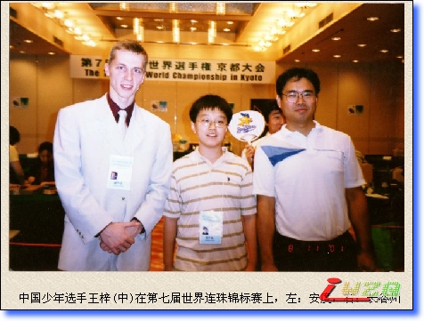
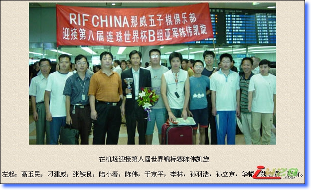
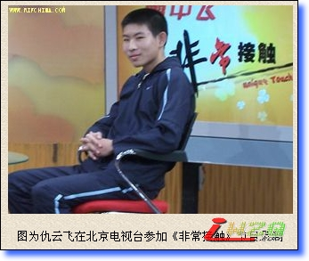
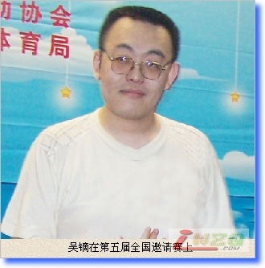

中国人与连珠世锦赛
#1 中国人与连珠世锦赛作者：有志青年 发表时间：2007-7-26 16:58:10
原文地址：http://www.rifchina.com/Article/ShowArticle.asp?ArticleID=4298
"本站获原作者直接授权转载，不得从本站再次转载"
国际连珠联盟于1988年8月8日成立。1989年8月2-6日于日本京都举行了第一届世界连珠锦标赛。
1993年8月8-13日在瑞典北部美丽的阿列普劳格举行了第三届世界连珠锦标赛，在本次比赛场上首次出现了中国人的身影，中国台北选手钟先骥(人称钟哥)参加了资格赛，取得第13名的成绩。
1995年7月31日-8月7日于爱沙尼亚塔林举行了第四届世界连珠锦标赛，钟哥再次参加了资格赛，虽仅有8人，却成绩垫底。中国现代五子棋的开拓者那威作为参加世锦赛的中国大陆第一人奋战于B组公开赛，最终取得第28名。

1997年8月1-6日在俄罗斯圣彼得堡举行的第五届世界连珠锦标赛上，钟哥第三次参加资格赛，获得第17名。那威再次出现在国际连珠赛场，在B组公开赛上取得第36名。本届首次设立了女子组的比赛。
1999年7月31日-8月5日在中国北京举行了第六届世界连珠锦标赛，在本届比赛上，中国选手本土作战，取得了不俗的成绩，令世人重新认识了中国选手。
在资格赛上，有三位中国台北选手和三位中国大陆选手，最好成绩是中国台北选手张益丰，第9名，中国大陆选手李栋第12名，刘彤第13名，陈伟第15名，另外两位中国台北选手李士文(杀手文)和陈镇国分别获得第14和第17名的成绩。
作为东道主，允许有1名选手参加A组比赛，张进宇代表中国棋手最强实力的选手参加了A组赛，并取得了3胜3和积4.5分的好成绩，名列第9，特别是逼和了获得冠军的安度·麦利蒂九段，战胜了第二名埃果尔·西涅夫八段。
参加女子组比赛的有中国大陆的林静、米晓妍、姚金蕊、胡夕和陆瑶，以及中国台北的谭素萍(PING)、蔡怡华(CICI)、陈明娇。陆瑶代表着当时中国女子棋手最高段位和最强实力，在俄罗斯强手如林中占得一席之地，取得第4名，前三名和第5、6名选手均为俄罗斯人，第7、8名分别由中国台北选手蔡怡华和谭素萍获得。
在B组公开赛上，有来自中国大陆的选手康志诚、于京平、陈伟、李栋、白涛、关继贤、邵小东、张茂龙、苏梁、赵谐、张晖、刘彤，以及中国台北选手张益丰、陈振国、陈隆泉、李士文，激烈程序丝毫不亚于A组赛，经过9轮的苦战，中国选手白涛一路过关斩将，最终将公开赛冠军杯捧在手中，这也是中国成人选手在国际赛场取得的唯一一块金牌，曾经三获A组亚军的日本著名棋手奈良秀树八段因首轮败于陈伟二段，仅获得亚军，爆出了本次比赛的最大冷门，陈二段为中国棋手夺得B组冠军扫清了最大的障碍。第3名由年仅12岁中国神童邵小东获得，陈伟取得第5名，张茂龙初段取得第10名。

2001年8月4-12日在日本京都举行的第七届世界连珠锦标赛上，中国大陆少年选手王梓只身赴日参赛。在资格赛，他取得了2胜1和的成绩，其中战胜了瑞典名将托德·安德森。中国台北选手林圣闵在资格赛中跻身前五成功晋级A组决赛，在A组比赛中，个个都是高手，林圣闵11战10负，仅在最后一轮战胜了韩国选手金秉允，成绩垫底。在女子组比赛中，中国台北选手许纹菁取得第3名的好成绩，杨晓郁和Hee Jeong Song分别获得第7和第9名。在B组公开赛上，中国大陆小选手王梓取得第29名，虽比赛成绩不佳，却得到了很好的锻炼和大赛经验。中国台北选手张益丰第11名，钟峻智第32名，陈威翰第37名。

2003年7月29日-8月8日第八届世界连珠锦标赛在瑞典举行。中国台北选手陈国汉、张益丰和吕维元分别获得第9、11和18名，杨晓郁在女子组获得亚军。在B组公开赛上，陈国汉获得第7名，张益丰第16名，吕维元第28名。中国大陆选手陈伟由于班机问题没能赶上参加本届资格赛，在接下来的B组公开赛上逼和冠军，战胜殿军，以6胜2和的成绩一举获得亚军。

2005年7月29日-8月7日第九届世界连珠锦标赛在爱沙尼亚塔林举行。中国台北选手程维元、陈国汉和王智坤在资格赛分别取得第8、第9和第18名的成绩。杨晓郁获得女子组第4名。在B组公开赛上，陈国汉取得第三名，其他选手分别是程维元，黄圣勋(音)，王智坤(音)成绩不佳。中国大陆没有选派选手参加本届比赛。


#2 Re:中国人与连珠世锦赛作者：黄药师 发表时间：2007-8-1 17:30:24
支持～～～～～～～
#3 Re:中国人与连珠世锦赛作者：isy12 发表时间：2007-8-2 9:54:54
还是不行